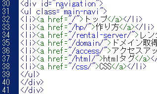
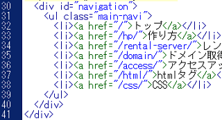
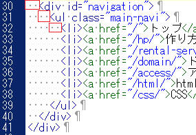
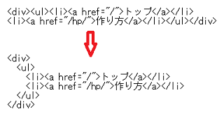

HTMLソースの書き方
HTMLの書き方については、W3Cに準拠したウェブ標準な書き方をするのが望ましいです。できるだけ、W3CのHTML validatorなどでチェックしながら記述していくとよいでしょう。
加えて、複数の人や会社にまたがって仕事をする場合など、効率的に作業をすすめるための暗黙のルールがいくつか存在します。
（参照：Google HTML/CSS Style Guide）
以下のような点に注意しながら書いていくとよいでしょう。
■インデントを入れる
インデントを挿入して字下げをすることで対応する開始タグと終了タグを認識しやすくなります。HTMLソースにインデントを挿入してもサイトの表示自体は変わりませんが、他の人が書いたHTMLでもサイトの構造を把握しやすくなる利点があります。
インデント無しの場合
インデントをしていない、左詰めの状態ではこのようになっています。これではどの要素が入れ子になっているのか分かりずらいです。

インデント有りの場合
「半角スペース」でインデントを入れて、それぞれの開始箇所をずらすと対応する開始タグと終了タグが分かり易くなります。

このインデントはタブでも入力できますが、半角スペース2文字分でずらして書いていくのが一般的です。全角スペースはデザインが崩れてしまうため、半角スペースを使いましょう。

■改行する
ブロック要素やリストタグごとに新しい１行を使って書き、適度に改行すると見やすくなります。また、それらの子要素にはインデントを入れましょう。

ただし、liのリストタグをインライン化する際、改行することで隙間が空いてしまうことがあります。そのような場合は横並びで記述しても問題ありません。
■ダブルクォーテーションマーク("")を使う
リンクのURLなどは、シングルクォート('URL')ではなく、ダブルクォート("URL")で囲って書きましょう。
<a href="https://www.homepage-tukurikata.com/">トップページ</a>
■DTDと文字コード
ドキュメントタイプは最新のHTML5で書くのが望ましいです。また、文字コードはバイトオーダーマークなし（BOMなし）のUTF-8（UTF-8N）がよいでしょう。
■小文字で書く
HTMLタグはすべて小文字の英数字を使いましょう。
■コメントアウトの挿入
他の人が見てわかりやすいように、必要に応じてコメントを入れるようにしましょう。
<!-- ここからコンテンツの部分 -->
このコメントタグ内に書かれていることは無視されますので、サイトの表示には影響ありません。
■ハイフンを使う
IDやクラス属性を区切って指定する際、アンダーハイフンは使わず、通常のハイフンを使うようにしましょう。
<div id="main_navi"> → <div id="main-navi">
ただし、主要サイトのHTMLソースを見てもインデントはあまり使われてなく、全て左詰めで書かれているケースも多いです。当サイト運営者もインデントを入れるとHTMLソースが読みづらく感じるため使用していません。
一方、CSSではインデントした方が該当箇所を発見しやすいので使用しています。
また、コメントアウトでは <!-- ここからヘッダー部分 --> のような記述もよく見かけますが、たいていはID属性に「header」や「footer」などの記述がありますので、小規模サイトの場合は書く必要はないかもしれません。
構成する要素が複雑な大規模サイトで、複数の人と仕事をする場合は必要かと思いますが、個人サイトの場合はそれほど気にする必要はないでしょう。